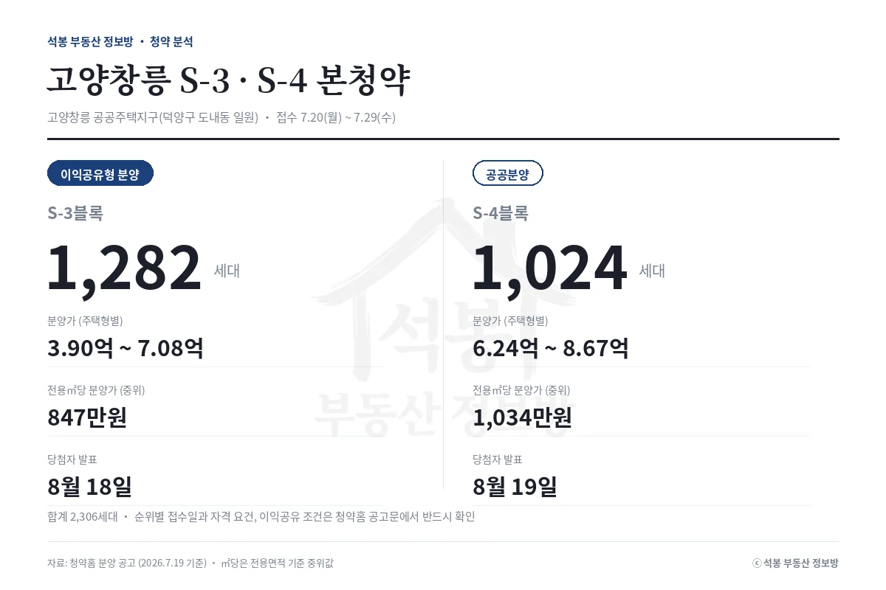
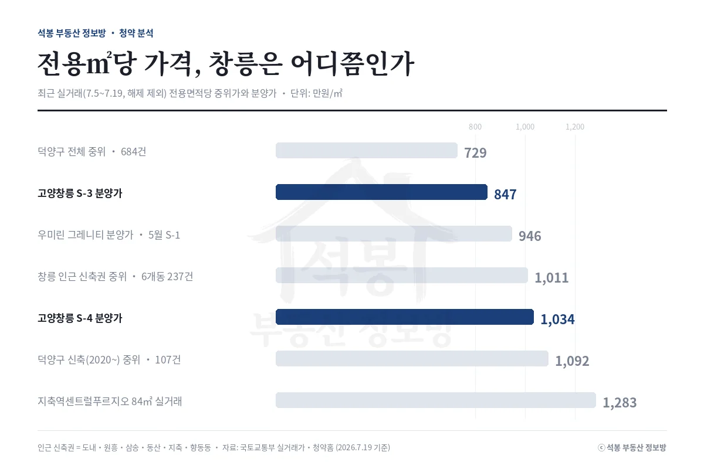
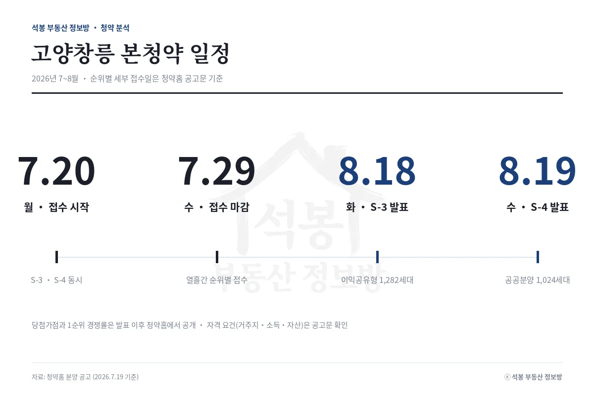

오늘(7월 20일) 고양창릉 공공주택지구(3기 신도시)의 두 블록, S-3(이익공유형 1,282세대)과 S-4(공공분양 1,024세대)가 동시에 접수를 시작합니다. 합쳐서 2,306세대, 이번 주 전국 최대 물량입니다. 관심은 하나로 모입니다. 분양가가 싼 건가, 비싼 건가. 답은 "어느 시세와 비교하느냐"에 따라 달라집니다. 최근 실거래 데이터로 하나씩 짚어봅니다.
단지 개요: 같은 지구, 다른 유형
두 블록 모두 고양시 덕양구 도내동 일원 고양창릉 지구 안에 있고, 접수 기간도 7월 20일부터 29일까지 열흘로 같습니다. 다른 건 유형입니다. S-3은 이익공유형 분양주택입니다. 분양가를 낮게 책정하는 대신, 나중에 집을 팔 때 생기는 시세차익의 일부를 사업시행자와 나누는 조건이 붙는 유형입니다. 초기 자금 부담이 작은 대신 수익도 온전히 내 것이 아니라는 점이 핵심이라, 공유 비율과 처분 조건을 공고문에서 반드시 확인해야 합니다. S-4는 일반적인 공공분양으로, 소득·자산·거주지 등 자격 요건이 적용됩니다. 당첨자 발표는 S-3이 8월 18일, S-4가 8월 19일입니다.
| S-3블록 | S-4블록 | |
|---|---|---|
| 유형 | 이익공유형 분양 | 공공분양 |
| 공급 | 1,282세대 | 1,024세대 |
| 분양가(주택형별) | 3.90억~7.08억 | 6.24억~8.67억 |
| 전용㎡당 분양가(중위) | 847만원 | 1,034만원 |
| 당첨자 발표 | 8월 18일 | 8월 19일 |
분양가 검증: 비교 기준을 바꾸면 답이 바뀐다

최근 실거래(7월 5~19일, 해제 제외)의 전용㎡당 중위가를 기준별로 놓고 창릉 분양가와 비교하면 아래와 같습니다.
| 비교 기준 (전용㎡당) | 시세 | S-3 (847만) | S-4 (1,034만) |
|---|---|---|---|
| 덕양구 전체 중위 (684건) | 729만원 | +16% | +42% |
| 창릉 인근 신축권 6개동 중위 (237건) | 1,011만원 | -16% | +2% |
| 덕양구 신축(2020~) 중위 (107건) | 1,092만원 | -22% | -5% |
| 지축역센트럴푸르지오 84㎡ 실거래 | 1,283만원 (10.9억) | S-4 최고 분양가 8.67억보다 2억 이상 높은 실거래 | |
첫 줄만 보면 "시세보다 비싼 분양"입니다. 하지만 덕양구 전체 표본에는 화정·행신의 1990년대 구축이 대거 섞여 있어서, 새 아파트가 들어설 창릉의 잣대로는 맞지 않습니다. 실제 생활권인 인근 신축권(도내·원흥·삼송·동산·지축·향동) 기준으로 보면 S-3은 16% 낮고 S-4는 시세와 나란한 수준이고, 신축(2020년 이후)만 추리면 둘 다 시세 아래로 내려갑니다.
참고로 같은 지구 S-1 우미린 그레니티(5월 접수)의 전용㎡당 분양가는 946만원이었습니다. 이번 S-3은 그보다 낮고 S-4는 높아서, 유형에 따라 지구 안에서도 가격이 층을 이룹니다.
정리

숫자만 요약하면 이렇습니다. 창릉 S-3·S-4의 분양가는 덕양구 전체 중위보다는 높지만, 실제 생활권인 인근 신축권 시세와 견주면 같거나 낮은 수준이고, 인근 신축 84㎡ 실거래와의 절대 격차는 2억 안팎입니다. 결과가 어느 쪽으로 나오든 1순위 경쟁률(1순위 접수 건수 ÷ 일반공급 세대수)은 발표 이후 청약홈에서 공개되며, 저희가 결과를 데이터로 다시 검증해 정리하겠습니다. 자격 요건과 이익공유 조건, 순위별 접수일은 반드시 청약홈 공고문에서 확인하세요.
원자료: 청약홈 분양 공고, 국토교통부 실거래가 공개시스템(시세는 2026년 7월 5~19일 신고분, 해제 제외, 전용면적당 중위가) · 분석·제작: 석봉 부동산 정보방 · 본 자료는 정보 제공 목적이며 투자 권유가 아닙니다. 청약 자격·일정·이익공유 조건은 청약홈 공고문을 반드시 확인하세요.